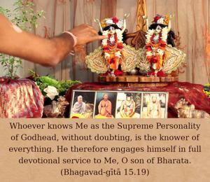
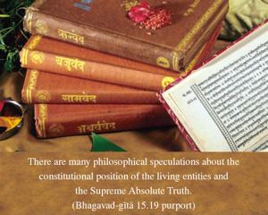
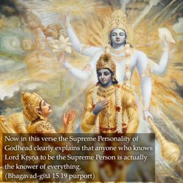

Whoever knows Me as the Supreme Personality of Godhead, without doubting, is the knower of everything. He therefore engages himself in full devotional service to Me, O son of Bharata.



There are many philosophical speculations about the constitutional position of the living entities and the Supreme Absolute Truth. Now in this verse the Supreme Personality of Godhead clearly explains that anyone who knows Lord Kṛṣṇa to be the Supreme Person is actually the knower of everything. The imperfect knower goes on simply speculating about the Absolute Truth, but the perfect knower, without wasting his valuable time, engages directly in Kṛṣṇa consciousness, the devotional service of the Supreme Lord. Throughout the whole of Bhagavad-gītā, this fact is being stressed at every step. And still there are so many stubborn commentators on Bhagavad-gītā who consider the Supreme Absolute Truth and the living entities to be one and the same.
Vedic knowledge is called śruti, learning by aural reception. One should actually receive the Vedic message from authorities like Kṛṣṇa and His representatives. Here Kṛṣṇa distinguishes everything very nicely, and one should hear from this source. Simply to hear like the hogs is not sufficient; one must be able to understand from the authorities. It is not that one should simply speculate academically. One should submissively hear from Bhagavad-gītā that these living entities are always subordinate to the Supreme Personality of Godhead. Anyone who is able to understand this, according to the Supreme Personality of Godhead, Śrī Kṛṣṇa, knows the purpose of the Vedas; no one else knows the purpose of the Vedas.
The word bhajati is very significant. In many places the word bhajati is expressed in relationship with the service of the Supreme Lord. If a person is engaged in full Kṛṣṇa consciousness, in the devotional service of the Lord, it is to be understood that he has understood all the Vedic knowledge. In the Vaiṣṇava paramparā it is said that if one is engaged in the devotional service of Kṛṣṇa, then there is no need for any other spiritual process for understanding the Supreme Absolute Truth. He has already come to the point, because he is engaged in the devotional service of the Lord. He has ended all preliminary processes of understanding. But if anyone, after speculating for hundreds of thousands of lives, does not come to the point that Kṛṣṇa is the Supreme Personality of Godhead and that one has to surrender there, all his speculation for so many years and lives is a useless waste of time.